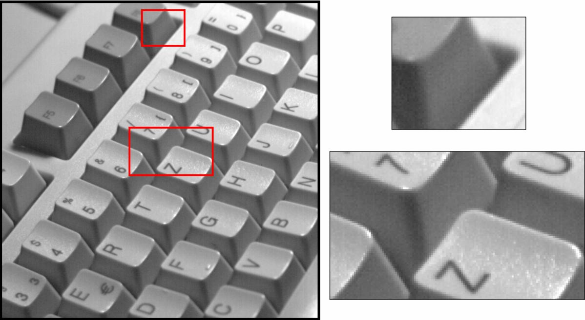

Shading and Fixed Pattern Noise Correction
Application Note
1 Problem Description
With shading and fixed pattern noise you can solve three different problems of the image acquisition. In the following, it will be described in a short form how
- defective pixel of the sensor can be detected and corrected,
- the offset of black pixels can be eleminated (with the help of the dark current many pixel don't have the value 0, even if they aren't exposed by light),
- irregular illumination ratio can be corrected by calculation
is possible with the software microDisplay and with the SDK.
The Shading Correction contains two different parts: The subtractive correction and the multiplicative correction. With the subtractive correction, the so called dark current can be corrected. With the multiplicative correction, irregular illumination circumstances will be corrected.
Dependent of the literature source, the subtractive correction is also called offset correction and the multiplicative correction is also described as gain correction.
2 Fixed Pattern Noise Correction / Defective Pixel Interpolation
2.1 Background
Defective pixel of the sensor can be eleminated with the help of the so called 'Fixed Pattern Noise Correction' (sometimes it it called 'Dead Pixel Cancelation').
Illustration 1
On the left: Original test image.
On the right: Test image area.
In illustration 1 a test image can be seen. It shows areas of defective pixels within right half which have been enlarged. The recognizable faulty pixel have been caused by defects within sensor. That means either that the defective pixel always must be at the same coordinates (therefore the name 'Fixed Pattern Noise'). On the other side the pattern of the defective pixels is differing for each camera sensor. Therefore, the correction of defective pixels has to be done for each camera itself.
For humans the defective pixels in illustration 1 are easy to detect. But, how can defective pixels of the sensor be detected automatically? Therefore, it is to think about what a defective pixel is. It is a point within the image that doesn't measure the indensity of the incoming light. Thus, a defective pixel delivers a fixed value independent from light indensity. Therefore, it is easy to detect the dead pixels automatically, if the sensor field will be completely darkened. Because in this case the defective pixel still deliver there constant value. Thus, they are more bright than the correct pixel.
Illustration 2: Brightened image of the completely darkened sensor.
Illustration 3: Histogram of the darkened sensor from illustration 2.
Illustration 4: The defective pixels of illustration 2 are marked white by a threshold of 36.
If we take a look at illustration 3, we will see that mostly all pixel values will be round about the peak of the brightness value 15. Two things will astonish: Either, the pixel value for most of the pixels is not null even without light, nor the shifted dark point is blurred. The reason for it is the so called dark current which causes that the pixel value is greater than null, even without light. Moreover, the dark current for each pixel is slightly different which results in a bell-shaped arrangement.
In spite of the difficulties in fact of the dark current, defective pixels can be detected automatically, if the pixels outside the bell-shaped curve are surely dead pixels. This red borderline is shown in illustration 3. In our example, the threshold is at 36.
If all pixel values which are greater than 36 within the dark image are marked white, the resulting image is shown in illustration 4. Accordingly, all white pixels are defective and violates the image analysis. The interference can be reduced, if an interpolated (means calculated) pixel value improves the representation of the unknown pixel.

Illustration 5:
The test image with Fixed Pattern Noise Correction.
Defective Pixels have been replaced by linear interpolation of its neighbors.
The Fixed Pattern Noise Correction interpolates the value of defective pixels out of its left and right neighbor. Herewith, a linear interpolation will be used. That means, the average of neighbor pixels will be used for faulty pixels. The resulting image of such a correction is shown in illustration 5.
3 Shading Correction: Subtractive Calculation
3.1 Background
The Shading Correction contains two different parts: The subtractive correction and the multiplicative correction. With the subtractive correction, the so called dark current can be corrected. With the multiplicative correction, irregular illumination circumstances will be corrected.
If the sensor will be covered with a photoresistant item and an image will be acquired, the resulting image is a so called dark image of the sensor. In illustration 6, an example of a brightend dark image is shown. With a perfect sensor, the dark image would be stady and all the pixel values would be exactly null. No real sensor can produce such an image.
Illustration 6: Dark image of a sensor.
For better reproduction, the image has been brightened a lot.
In a histogram of a (not brightened) dark image, the background noise of individual pixels can be seen. In contrast to a perfect sensor, not all the pixels are null, but most of the pixels are blurred and on the bell-shaped curve near 15.
The reason is that during exposure, in semi-conductor material electrons can get free because of temperature effects, even if no light has fallen on the sensor element and therefore, the messurement always will be greater than null. This effect is called the dark current and it is not only temperature depending, but it will be affected by the physical consistence (impurity) within teh sensor element of the corresponding pixel. Hence, the dark current is either temperature depending (which is in practice of little importance) and it is different for each sensor.
Illustration 7: Histogram of the dark image in illustration 7.

Illustration 8: Histogram of a dark image with enabled subtractive correction.
Therefore, the dark current of a pixel is determined by its unchangable physical properties (temperature variation neglected). Consequence is the important property that the dark current for each pixel is different, but constant. Therefore, it has to be messured for each sensor only once.
After the derivation has been clarified, we can take a look at the effect according the image acquisition. In an ideal sensor, electrons will get free in the semi-conductor material. Its number is directly proportional to the indensity of the incoming light, so that the light indensity can be determined by messuring the originated stream. Hereof, the electrons that got free are independent in fact of temperature effects and they generate the additional dark current which falsify the messurement. The independence at the becoming of both streams enables the simple correction of light messurement by the subtraction of the additional dark current from the messured stream.
Herewith, it is obvious, how the messurement falsified by the dark current can be eleminated by the subtractive correction: Initially, the sensor has to be covered completely and the dark image has to be acquired as reference image. At this juncture, the messured pixel values are not null, but the pixel depending dark current. Because the dark current as additional component is contained in the light messurement, the dark reference image must be subtracted, so that the pattern in the image that has been caused by the dark current will be eleminated.
The effect of the subtractive correction gets more conspicuous in case of very dark images, that means in case of very small pixel values, because here, the relative fault is the biggest caused by the dark current. A trivial example is the acquisition of a dark image at enabled subtractive correction. The result is completely black as it could have been expected with a ideal sensor. We renounce the reproduction of such a completely black image, at this point, but in illustration 8 the histogram is shown. Obviously, the betterness can be seen: The bell-shaped curve in illustration 7 has become a small peak which is located at null.
4 Shading Correction: Multiplicative Calculation
4.1 Background
The Shading Correction contains two different parts: The subtractive correction and the multiplicative correction. With the subtractive correction, the so called dark current can be corrected. With the multiplicative correction, irregular illumination circumstances will be corrected.
The irregular illumination of an image field complicates the image analysis. Therefore, at assembly of apperatures it has to bee seen that an ideal illumination level can be guaranteed. Nevertheless, an illumination which is not perfect can not be avoided with a passable effort. Additionally, the lense system of the camera causes unavoidable and less good illuminated image margins.
Often, it will be tried to adjust this shortcoming of image acquisition with spatially adaptive algorithms. But it is more elegant to correct the static illumination shortcoming with multiplicative shading correction, already at image acquisition.
At this point, it is helpful to see an application for illustration, e. g. the binary segmentation of the image. The left image in illustration 9 (on the left) shows the image acquisition of a text that should be segmented into the two classes 'background' and 'text'. The result of the segmentation is shown in illustration 9 (on the right).
In the left top of the image the image is under segmented, that means, the letters are already illuminated in this image half, so that parts are classified as background. Besides, the bad illuminated image part on the right shows an over segmentation, where the background has been classified as text. The irregular illumination of an image area makes it unpossible to segment the image with a global threshold, that means with a uniform threshold for the whole image. If the threshold would be reduced for correctly segmenting the letters on the right side of the image, the classification on the left top of the image would get more worse (illustration 10). In contrast, the opposite would be the result (illustration 10).
Illustration 9
On the left: Text which is irregular illuminated.
On the right: The same image, but binary segmented with a global threshold.
Illustration 10:
Reducing the threshold (left image), reduces the quality of segmentation in highly illuminated areas.
Rising the threshold (right image), reduces the quality of segmentation in worse illuminated areas.
To avoid the pattern noise which came up with the irregular illumination of the image field, the acquisition of an image is nesseccary which only contains the not perfect illumination circumstances. Such an image can be gotten, if a completely white image field will be acquired under given illumination circumstances. In such an image, each pixel would be exacly white, if it would be ideal illuminated and the camera's optic wouldn't cause pattern noise. Such an image is called white reference image. Important either is that the white reference image really is an illumination messurement, nor that an image region has been overexposed.
Thus, the white reference image describes the tolerance of the messured brightness of the ideal brightness (white). The white reference image can be gotten, if the whole image field will be covered with a white paper.
Illustration 11: White reference image gotten by covering the image field with a white paper.
How can the not perfect illumination be corrected with a white reference image? Therefore, the meaning of such an image has to be understood. The image contains the dynamical value of each pixel. Per definition, each pixel in a white reference image has namely the maximum brightness under given circumstances. At a real image scene with objects, under the same illumination circumstances, each pixel will only have a value between null and its value in the reference image. The pixel depending dynamic values which is caused by illumination circumstances have to be rescaled to get a corrected image.
The result of the shading correction of this example is shown in illustration 12 on the left. On the right you will see the segmentation of the image with a global threshold. Obviously, in both images to a large extent the correction of the irregular illumination can be seen.
Illustration 12
On the left: The shading corrected image of illustration 9.
On the right: The segmented image by a global threshold.
Finally, we like to point to principal difficulties of the multiplicative shading correction:
- The coefficients of the multiplicative shading correction are static. Therefore, the white reference image has to be gotten under exactly the same illumination circumstances as during the later acquisition. Normally, it is given in controllable illumination circumstances (artificial illumination), only.
- Because the illumination usually doesn't change with the two-dimensional projection of the image field on the sensor, but with the three-dimensional position of the object to acquire, it has to be payed attention about taking the white reference image by covering the same three-dimensional structure.
Not affected of these difficulties are the illumination differences which have not been caused by external effects, but by internal noise. So, the reduced illumination in the edges of the camera images is defined by the not perfect objective of the camera and, therefore, it can be corrected for any acquisition conditions.
| Forward |